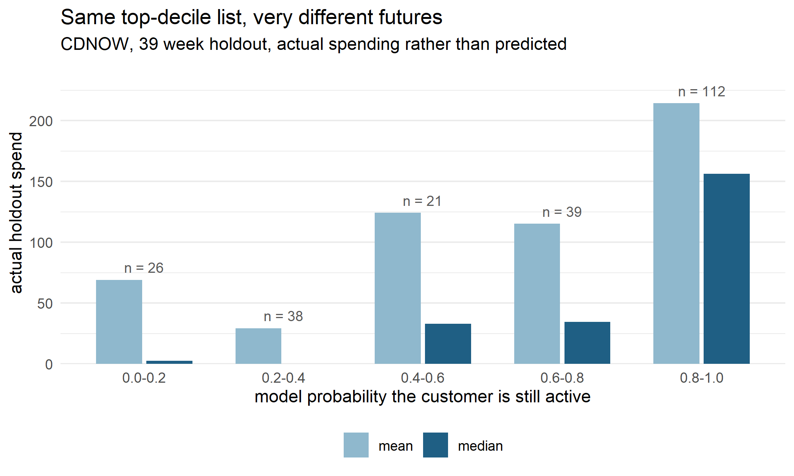

Sort your customers by what they have spent and take the top decile. That list is the one retention budgets get spent against. On real transaction data with a real holdout period, a third of that list had almost certainly stopped buying before the list was drawn, and the median customer in that third went on to spend nothing at all.
The problem is that in a non-contractual business nobody cancels. There is no churn event to observe, so a customer who has quietly left looks exactly like a customer who is between purchases. Historical spend cannot tell them apart, because it throws away the one thing that distinguishes them, which is when the spending happened.
library(CLVTools)
data("cdnow")
SPLIT <- as.Date("1997-10-01") # 39 weeks of history, 39 weeks of holdout
d <- as.data.frame(cdnow)
d$Date <- as.Date(d$Date)
cal <- subset(d, Date <= SPLIT)
c(customers = length(unique(d$Id)),
transactions = nrow(d),
weeks = round(as.numeric(max(d$Date) - min(d$Date)) / 7))
## customers transactions weeks
## 2357 6696 78The CDNOW panel is the standard public test bed for this: every customer made a first purchase in the opening quarter of 1997, and the panel runs to mid 1998. Splitting it in half gives 39 weeks to learn from and 39 weeks of real behaviour to be judged against. Nothing below is simulated.
The naive forecast writes itself when the two windows are the same length. Whatever a customer spent in the last 39 weeks, assume they spend again in the next 39.
clv <- clvdata(cdnow, date.format = "ymd", time.unit = "week", estimation.split = 39,
name.id = "Id", name.date = "Date", name.price = "Price")
fit <- pnbd(clv)
p <- as.data.frame(predict(fit, verbose = FALSE))
p$hist_spend <- as.numeric(tapply(cal$Price, cal$Id, sum)[as.character(p$Id)])
data.frame(
method = c("actual holdout", "extrapolate last period", "Pareto/NBD"),
total = round(c(sum(p$actual.period.spending), sum(p$hist_spend),
sum(p$predicted.period.spending))),
error = c("", sprintf("%+.0f%%", 100 * (sum(p$hist_spend) /
sum(p$actual.period.spending) - 1)),
sprintf("%+.0f%%", 100 * (sum(p$predicted.period.spending) /
sum(p$actual.period.spending) - 1))))
## method total error
## 1 actual holdout 70792
## 2 extrapolate last period 173300 +145%
## 3 Pareto/NBD 59640 -16%Extrapolation overshoots by 145%. The model undershoots by 16%, so it is closer but it is not free of error either, and that is worth saying out loud before the part where it wins.
That 145% also flatters the argument, so here is the correction against my own headline. Every CDNOW customer makes a first purchase in the opening quarter, which means the calibration window contains an acquisition purchase that the holdout window structurally cannot. Strip each customer’s first transaction and extrapolate only repeat spending, and the comparison becomes fair.
first_amt <- sapply(split(cal, cal$Id), function(z) z$Price[which.min(z$Date)])
p$repeat_spend <- p$hist_spend - as.numeric(first_amt[as.character(p$Id)])
fair_err <- 100 * (sum(p$repeat_spend) / sum(p$actual.period.spending) - 1)
c(repeat_only_forecast = round(sum(p$repeat_spend)),
actual = round(sum(p$actual.period.spending)),
overshoot_pct = round(fair_err))
## repeat_only_forecast actual overshoot_pct
## 95540 70792 35Still an overshoot, still in the same direction, but 35% rather than 145%. Use that number as the honest one. The level is not where this argument is strongest anyway.
The level is the less interesting failure. The ranking is where money actually gets
allocated. pnbd returns PAlive, the probability a customer is still active given how much
and how recently they bought.
top <- p[order(p$hist_spend, decreasing = TRUE)[1:round(0.10 * nrow(p))], ]
dead <- top$PAlive < 0.5
data.frame(
group = c("flagged inactive", "still active"),
customers = c(sum(dead), sum(!dead)),
mean_holdout = round(c(mean(top$actual.period.spending[dead]),
mean(top$actual.period.spending[!dead])), 2),
median_holdout = round(c(median(top$actual.period.spending[dead]),
median(top$actual.period.spending[!dead])), 2),
pct_buying_nothing = round(100 * c(mean(top$actual.period.spending[dead] == 0),
mean(top$actual.period.spending[!dead] == 0))))
## group customers mean_holdout median_holdout pct_buying_nothing
## 1 flagged inactive 76 59.73 0.00 61
## 2 still active 160 184.24 130.45 2132% of the top decile is flagged. Those customers go on to earn 13% of the decile’s holdout revenue, they spend 3.1 times less on average, and the median one spends 0 dollars against 130 for the rest. The median is the number to look at, because the mean is held up by a handful of flagged customers who did come back. Most of them simply do not.

Figure 1: Within the top decile by historical spend, what customers actually went on to spend, binned by the model’s probability that they were still active. The mean is noisy in the small low-probability bins because a few flagged customers did come back. The median does not move.
This is not the model asserting something. Hold purchase count fixed and let only recency vary, and the difference is already in the raw data.
p$cal_n <- as.numeric(tapply(cal$Price, cal$Id, length)[as.character(p$Id)])
lastbuy <- tapply(cal$Date, cal$Id, max)
p$recency_wk <- as.numeric(SPLIT - as.Date(lastbuy[as.character(p$Id)],
origin = "1970-01-01")) / 7
do.call(rbind, lapply(2:4, function(k) {
s <- subset(p, cal_n == k)
recent <- s$recency_wk <= median(s$recency_wk)
data.frame(purchases = k, customers = nrow(s),
recent_half = round(mean(s$actual.period.spending[recent]), 2),
stale_half = round(mean(s$actual.period.spending[!recent]), 2),
ratio = round(mean(s$actual.period.spending[recent]) /
mean(s$actual.period.spending[!recent]), 2))
}))
## purchases customers recent_half stale_half ratio
## 1 2 438 34.80 20.03 1.74
## 2 3 214 60.89 41.08 1.48
## 3 4 101 90.62 34.46 2.63Two customers, both with four purchases on the books, and the one who bought more recently is worth multiples of the one who did not. Historical spend scores them identically. That is the whole gap, and it is why the fix is a model that uses recency rather than a better spreadsheet.
A bootstrap on the headline gap, computed in Python so the resampling is independent of the R code above. Customers are resampled, model predictions are held fixed, so this is uncertainty in the population difference and not in the fitted parameters.
import numpy as np
spend = np.array(r.top_spend, dtype=float)
flag = np.array(r.top_flag, dtype=bool)
rng = np.random.default_rng(20260912)
obs = spend[~flag].mean() / spend[flag].mean()
idx = rng.integers(0, len(spend), size=(4000, len(spend)))
reps = []
for row in idx:
s, f = spend[row], flag[row]
if f.sum() > 0 and (~f).sum() > 0:
reps.append(s[~f].mean() / s[f].mean())
lo, hi = np.percentile(reps, [2.5, 97.5])
print(f"active / inactive mean spend ratio: {obs:.2f}")
## active / inactive mean spend ratio: 3.08
print(f"95% bootstrap interval: {lo:.2f} to {hi:.2f} ({len(reps)} resamples)")
## 95% bootstrap interval: 1.92 to 5.77 (4000 resamples)The model is not a forecast of the total, and the table above says so: it came in 16% under the real holdout figure. Pareto/NBD is built to rank customers and to estimate who is still there, and that is what it is good at.
The ranking gain is also narrower than the headline suggests. Targeting the top decile by model prediction rather than by historical spend captures only a couple of extra points of holdout revenue, because the two lists overlap heavily. The value is not a different list, it is knowing which names on the same list to stop spending on.
capture <- function(score, frac) {
sel <- order(score, decreasing = TRUE)[1:ceiling(frac * nrow(p))]
100 * sum(p$actual.period.spending[sel]) / sum(p$actual.period.spending)
}
data.frame(targeted = c("top 5%", "top 10%", "top 20%"),
by_historical_spend = round(sapply(c(.05, .10, .20),
function(f) capture(p$hist_spend, f)), 1),
by_model = round(sapply(c(.05, .10, .20),
function(f) capture(p$predicted.period.spending, f)), 1))
## targeted by_historical_spend by_model
## 1 top 5% 32.0 37.0
## 2 top 10% 48.1 50.2
## 3 top 20% 66.2 67.1And none of this applies to a contractual business. If customers sign up and cancel, you observe churn directly, a survival model is the right tool, and the whole latent-attrition apparatus is unnecessary. This is a fix for retail, ecommerce, and anywhere else that people leave without telling you.
One dataset, one product category, one period. CDNOW is the standard benchmark precisely because it is public and well studied, not because 1997 compact disc buyers resemble your customers.
The latent attrition models behind this, and where they break, are covered in Marketing Research.